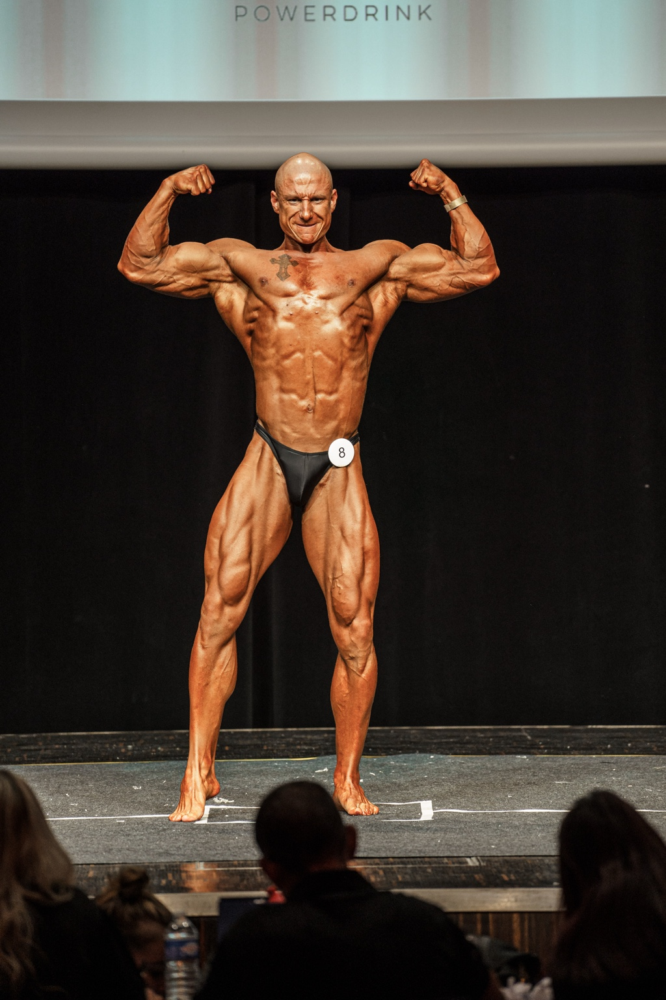
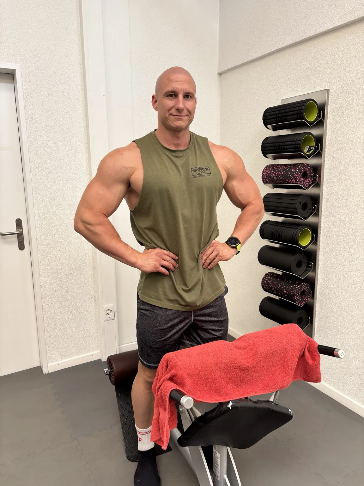
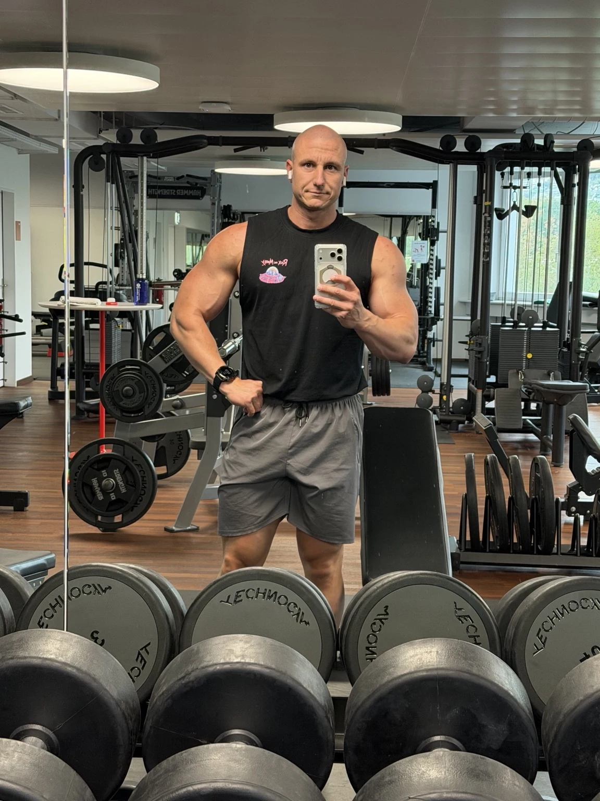
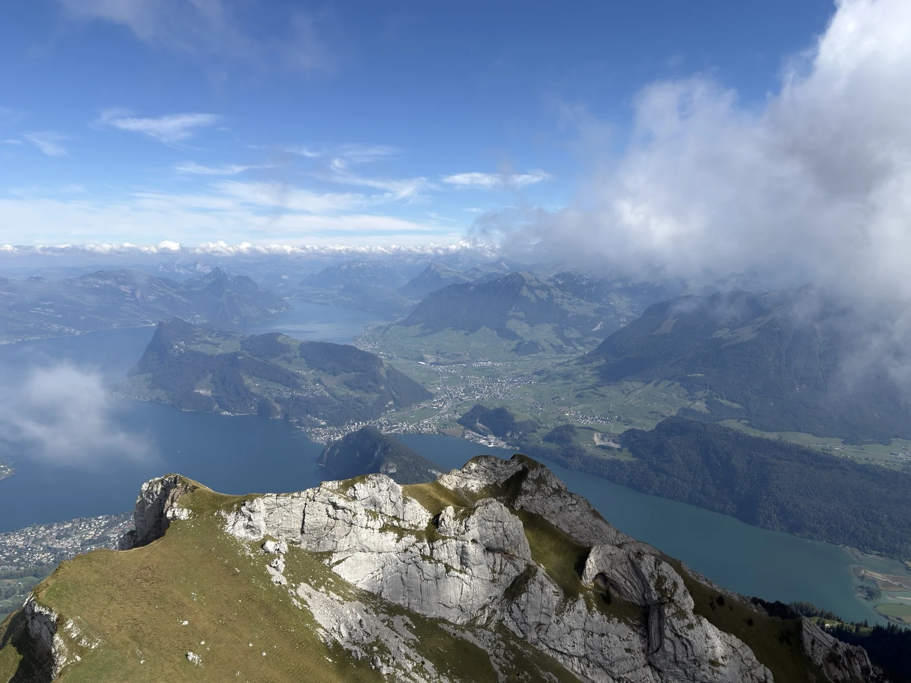

TRAINING
Muskelaufbau, Kraft, Ausdauer und Leistungsfähigkeit. Training soll fordern – und gleichzeitig intelligent geplant sein.

WICKI SPORT SCHWEIZ
TRAINING • ERNÄHRUNG • LIFESTYLECOACHING
Werde stärker. Iss entspannter. Finde deine Balance. Persönliches Coaching, das zu deinen Zielen passt – und auch in einem vollen Alltag Platz findet.
01 / DIE PHILOSOPHIE
DER KÖRPER IST DAS ERGEBNIS. DER ALLTAG DIE BASIS.Ein guter Körper entsteht nicht nur während einer Stunde im Gym.
Training setzt den Reiz. Ernährung liefert die Grundlage. Regeneration ermöglicht Anpassung. Und dein Lifestyle entscheidet darüber, ob du das Ganze langfristig durchziehst.
Wicki Sport verbindet diese Bereiche zu einem System, das in dein reales Leben passen soll.
Muskelaufbau, Kraft, Ausdauer und Leistungsfähigkeit. Training soll fordern – und gleichzeitig intelligent geplant sein.
Einfach. Alltagstauglich. Planbar. Keine unnötigen Verbote und keine Ernährung, die nur für wenige Wochen funktioniert.
Stress bewusster begegnen, Erholung einplanen und gesunde Routinen aufbauen. Kleine Schritte, die auch in vollen Wochen machbar bleiben.

02 / DER MENSCH DAHINTER
Ich bin Matthias Wicki. Seit 16 Jahren gehört Training zu meinem Leben. Als Polizist kenne ich unregelmässige Arbeitszeiten und Tage, an denen vieles gleichzeitig gefragt ist. Genau deshalb muss ein guter Plan auch ausserhalb des Gyms funktionieren.
Krafttraining und Muskelaufbau bilden einen wichtigen Bestandteil meines eigenen Trainings. Gleichzeitig gehören Ausdauer, Beweglichkeit, Regeneration und eine sinnvolle Ernährung für mich zu einem leistungsfähigen Körper dazu.
Mit Wicki Sport möchte ich dieses Wissen praktisch weitergeben. Mit klaren Strukturen, nachvollziehbaren Entscheidungen und langfristiger Entwicklung.
LERN MICH AUF INSTAGRAM KENNEN ↗„DU BRAUCHST NICHT DEN PERFEKTEN PLAN.
DU BRAUCHST EINEN PLAN, DEN DU
LANGFRISTIG UMSETZEN KANNST.“

03 / TRAINING
Dein Training wird auf dein Ziel, deinen Trainingsstand und deinen Alltag abgestimmt. Trainingsvolumen, Intensität, Frequenz und Regeneration müssen zusammenpassen.
Keine vorgefertigte Standardlösung für jeden.
TRAININGSCOACHING ANFRAGEN ↗04 / ERNÄHRUNG
Eine gute Ernährung muss nicht perfekt sein. Sie muss dich versorgen, schmecken und im Alltag funktionieren.
Einfache Mahlzeiten, die satt machen und dich versorgen. Zusammen finden wir eine Struktur für Einkauf, Vorbereitung und Essen unterwegs. Gleichzeitig bleibt bewusst Platz für Genuss.
80/20 ist eine Orientierung, keine exakte Rechnung: eine verlässliche Basis im Alltag und Freiraum für Restaurantbesuche, gemeinsame Essen und Genuss.
RUHE & ENTSPANNUNG
Beruf, Training, Familie und Termine: Manchmal bleibt für dich selbst wenig übrig. Im Lifestylecoaching schauen wir gemeinsam, wo du ansetzen kannst – mit realistischen Prioritäten, bewussten Pausen und Routinen, die dich entlasten.
Ob vorbereitete Mahlzeiten für den Arbeitstag, ein kurzer Spaziergang nach der Schicht oder feste Zeit für Erholung: Wir machen gesunde Gewohnheiten konkret. Ohne den Anspruch, jeden Tag alles perfekt zu machen.
05 / DEIN COACHING
Der Ausgangspunkt bist du. Deine Situation, deine Möglichkeiten und das, was du erreichen möchtest.
Individuelle Trainingsplanung passend zu Ziel, Trainingsstand, verfügbarer Zeit und Equipment.
COACHING ANFRAGEN ↗Alltagstaugliche Ernährungsstruktur passend zu Ziel, Energiebedarf, Vorlieben und Tagesablauf.
COACHING ANFRAGEN ↗Beide Bereiche sinnvoll aufeinander abgestimmt. Für eine ganzheitliche Struktur in deinem Alltag.
COACHING ANFRAGEN ↗Persönliche Begleitung für deinen Alltag: Umgang mit Stress, gesunde Ernährung trotz Zeitdruck und Routinen nach dem 80/20-Prinzip.
COACHING ANFRAGEN ↗06 / WISSEN
Verstehen, was du tust – und warum.
Diese Themen behandle ich auf meinem Instagram-Kanal. Dort kannst du die Beiträge nachlesen.
07 / @COACHING_BY_WICKI
Auf Instagram findest du regelmässig Inhalte zu Training, Ernährung, Regeneration und Lifestyle.
AUF INSTAGRAM FOLGEN ↗
DER ERSTE SCHRITT IST DEINER.
Erzähl mir, wo du aktuell stehst und was du erreichen möchtest.
COACHING ANFRAGEN ↗08 / KONTAKT
Was ist dein Ziel?
Ich freue mich, von dir zu hören.
DIREKTER KONTAKT
matthias@wickisport.chE-MAIL SCHREIBEN ↗Beim Klick öffnet sich dein eingerichtetes E-Mail-Programm.
ODERDu erreichst mich auch auf Instagram.
@COACHING_BY_WICKI ↗